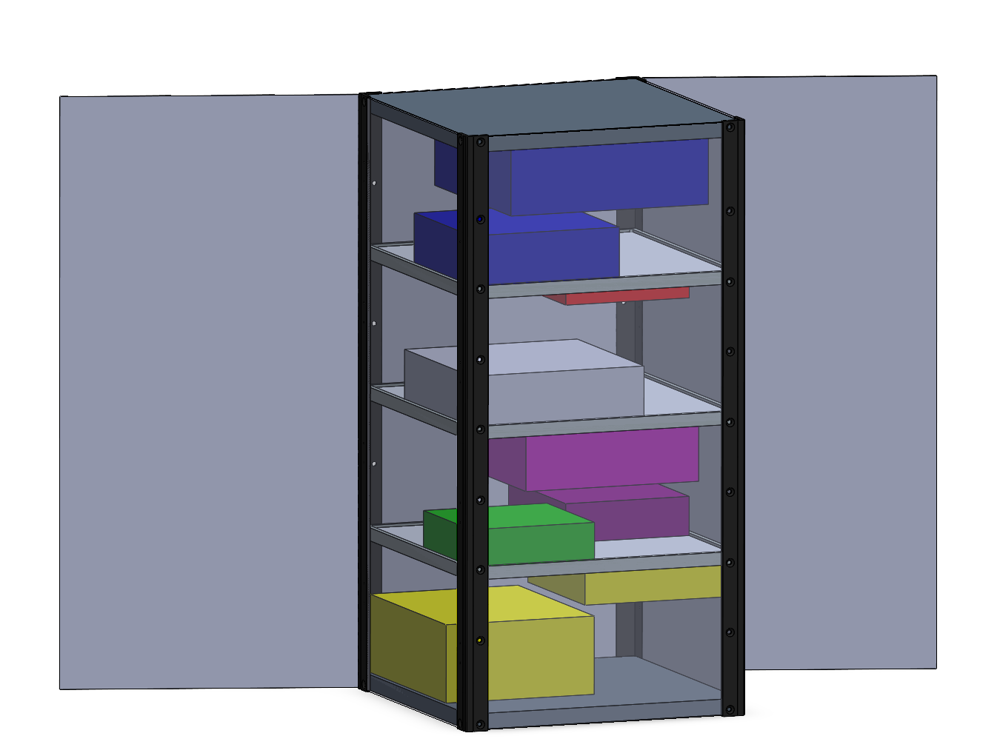

01
AtlasSAT-16U
Independent Spacecraft Design Project
Independent 16U Earth-observation spacecraft design study focused on water and agricultural monitoring in the Souss-Massa region of Morocco. The project spans spacecraft configuration, structural design and analysis, thermal modelling, orbital analysis and systems-level engineering.
Spacecraft structures · CAD · FEA · Thermal · Orbital · Systems
